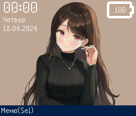
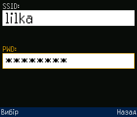
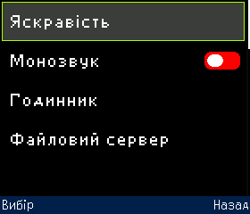

Можливості
Основні можливості, які пропонує Meowui:
- Керування макетами графічного інтерфейсу та вивід їх на дисплей.
- Обробка користувацького вводу з кнопок, сенсорних пінів мікроконтролера та підтримка деяких драйверів сенсорних дисплеїв.
- Проста архітектура, яка буде зрозуміла будь-кому, хто має досвід розробки на Arduino.
- Ігровий рушій для розробки 2D ігор в тому числі багатокористувацьких.
Крім вище зазначених функцій в Meowui адаптовано деякі стороні та реалізовано власні бібліотеки для виконання різноманітних завдань. Наприклад, власна бібліотека для взаємодії із картою пам’яті.
В якості графічного ядра фреймворку використовується модифікована бібліотека TFT_eSPI. Завдяки цьому досягається підтримка більшості популярних драйверів дисплеїв. Потрібно лише в налаштуваннях вказати драйвер дисплею та його параметри.
Важливо
З оригінальною бібліотекою TFT_eSPI Meowui працюватиме некоректно!
Нижче наведено приклади типового інтерфейсу на Meowui.



